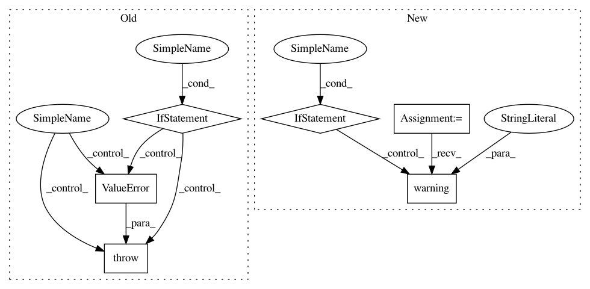

e6ef08f367e0389e811d63eaa5afb16183a19e2b,src/sdk/pynni/nni/compression/tensorflow/compressor.py,,_locate_layers,#Any#Any#,240
Before Change
// TODO: it can only find layers in `Model` and `list` for now.
ret = {}
if isinstance(model, tf.keras.Model):
for key, value in model.__dict__.items():
if isinstance(value, tf.keras.Model):
ret.update(_locate_layers(value, cur_path + [key]))
elif isinstance(value, list):
ret.update(_locate_layers(value, cur_path + [key]))
elif isinstance(value, tf.keras.layers.Layer):
ret[id(value)] = LayerInfo(value, cur_path + [key])
elif isinstance(model, list):
for i, item in enumerate(model):
if isinstance(item, tf.keras.Model):
ret.update(_locate_layers(item, cur_path + [i]))
elif isinstance(item, tf.keras.layers.Layer):
ret[id(item)] = LayerInfo(item, cur_path + [i])
else:
raise ValueError("Unexpected model type: {}".format(type(model)))
return ret
def _select_config(layer_info, config_list):
// Find the last matching config block for given layer.
After Change
// `cur_path`s format is documented in `LayerInfo.path`.
// TODO: it can only find layers in `Model` and `list` for now.
assert isinstance(model, tf.keras.Model)
if isinstance(model, tf.keras.Sequential):
_logger.warning("`Sequential` model is not supported yet, ignored.")
ret = {}
for key, value in model.__dict__.items():
if isinstance(value, tf.keras.Model):
ret.update(_locate_layers(value, cur_path + [key]))
In pattern: SUPERPATTERN
Frequency: 3
Non-data size: 6
Instances
Project Name: microsoft/nni
Commit Name: e6ef08f367e0389e811d63eaa5afb16183a19e2b
Time: 2020-08-24
Author: 40699903+liuzhe-lz@users.noreply.github.com
File Name: src/sdk/pynni/nni/compression/tensorflow/compressor.py
Class Name:
Method Name: _locate_layers
Project Name: ray-project/ray
Commit Name: 415be78cc0d1275a29d0ceda550d0d7a7a5224ea
Time: 2020-09-08
Author: amogkam@users.noreply.github.com
File Name: python/ray/util/sgd/torch/torch_trainer.py
Class Name: TorchTrainer
Method Name: __init__
Project Name: ray-project/ray
Commit Name: 860eb6f13a0e570b95bd251eb53105473850cbdc
Time: 2020-05-24
Author: ed.nmi.oakes@gmail.com
File Name: python/ray/actor.py
Class Name: ActorClass
Method Name: _remote